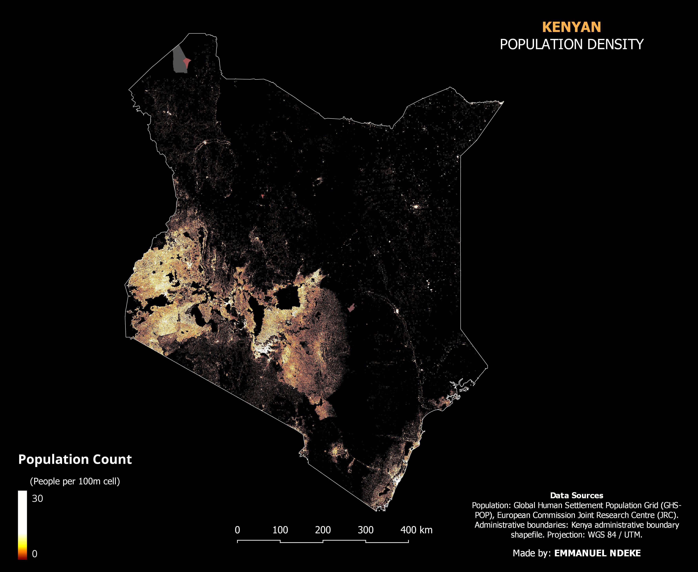
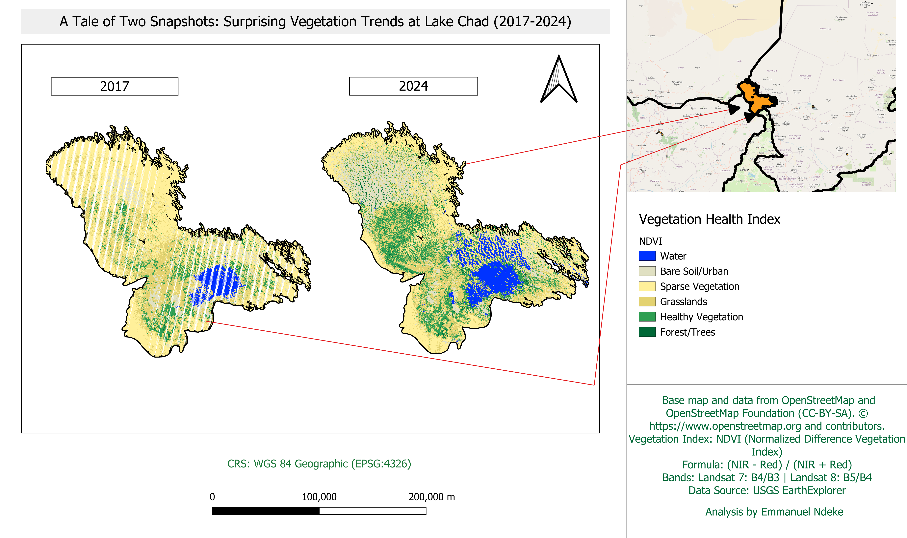

My GIS Projects
Population Density Mapping

Geospatial visualization of population distribution patterns in Kenya.
Land Cover Classification

This project maps land use and land cover patterns in Nairobi using satellite imagery and GIS analysis. It highlights environmental changes and helps in resource management and planning.
Land Surface Temperature

This project highlights thermal satellite analysis showing temperature variations compared with NDVI across Nairobi.
Rainfall Mapping

This project analyzes rainfall distribution using geospatial datasets processed in GIS. The analysis highlights spatial variability in precipitation patterns and helps understand climate variability across the study region.
NDVI Vegetation Analysis

Satellite vegetation analysis in Lake Chad used to understand vegetation health changes around the area.